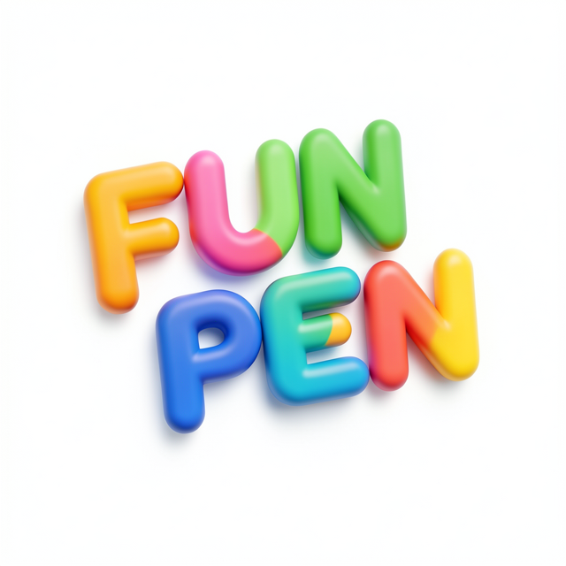
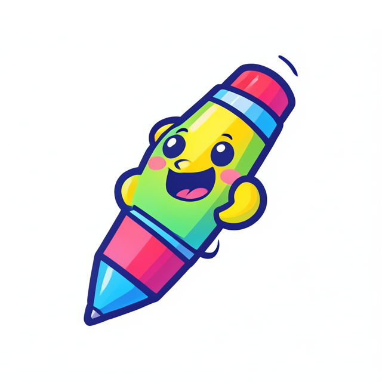
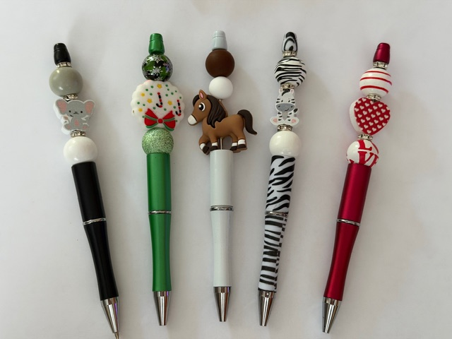
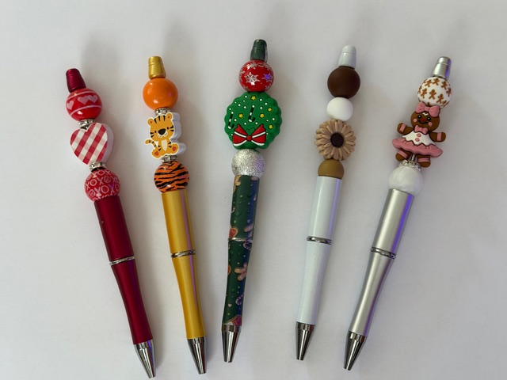
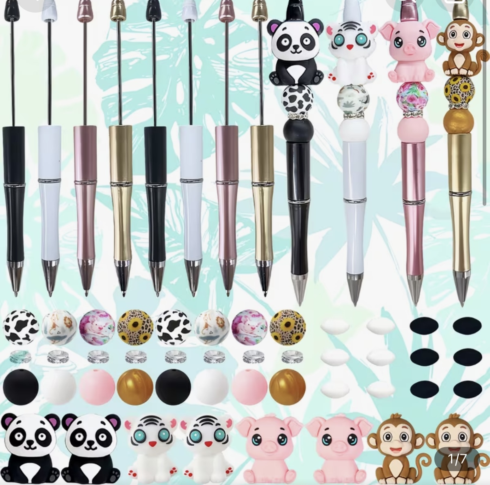
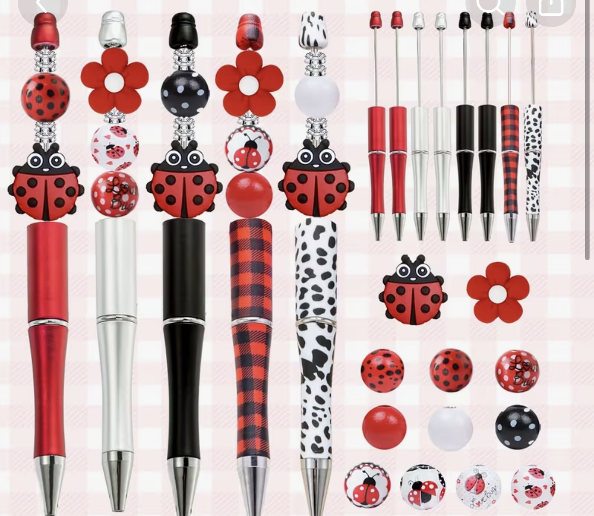
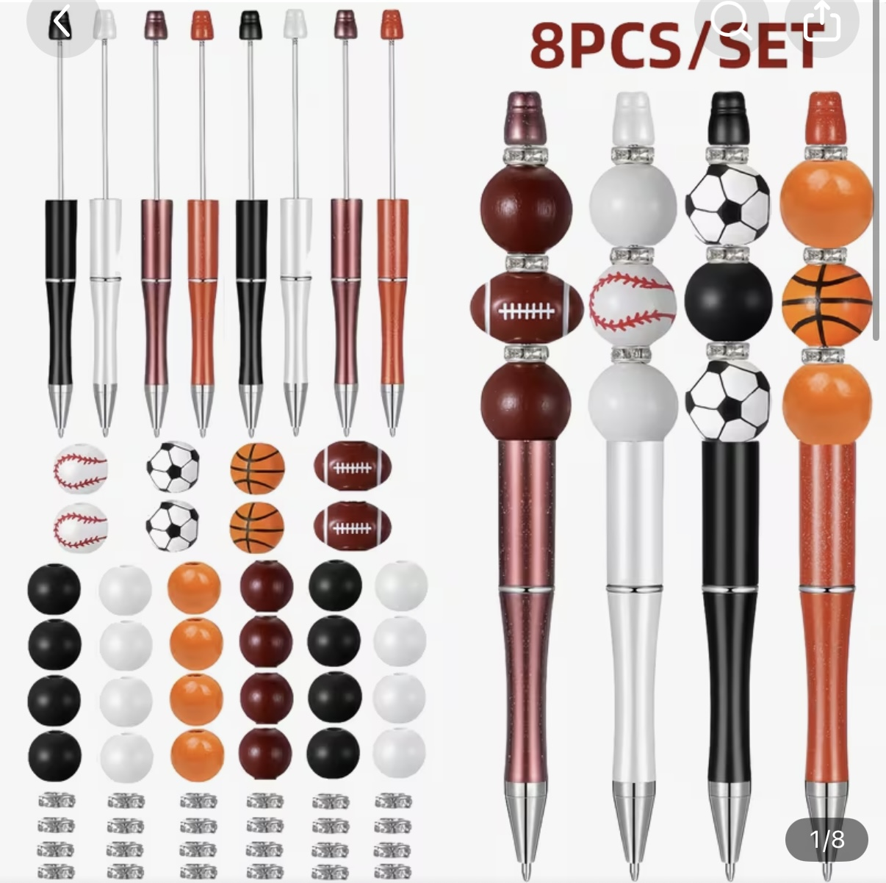

E-shop se zábavnými propiskami.

Psaní, které baví.Zábavné a originální propisky do penálu, na pracovní stůl i jako dárek.
Vyberte si a pošlete nám žádost přes e-mail.

Psát se dá i s úsměvem.
FUN PEN je e-shop se zábavnými a kreativními propiskami.
S takovými, které rozzáří penál, oživí poradu
a
potěší jako drobný dárek.
Psát s nimi je prostě veselejší.
Proč zábavná propiska?
Obyčejná propiska se ztratí v šuplíku. Ta zábavná se vrací do ruky.
Barva, tvar nebo vtipný detail - díky tomu si ji zapamatujete,
rádi ji vytáhnete a ostatní se ptají, kde jste ji vzali.
Kam se hodí
Pro každý stůl, penál i kapsu.
Do školy
Penál, který se těší na hodinu.
Poznámky i domácí úkoly s veselejší tváří.
Do kanceláře
Kousek barvy mezi šedivými šanony.
Na poradě si jí všimne každý.
Jako dárek
Drobnost, která udělá radost.
Ke kartičce, do balíčku i jen tak.
Pro sebe
Protože i nákupní seznam se píše lépe, když vás pero baví.
Galerie
Propisky, které chcete mít po ruce.
Vánoční na poznámky, se zvířátky na nápady, se srdíčky na podpis
a jednu navíc na půjčení.
Co nabízíme:
1) Zábavné propisky - 5 ks stylově různých per.
2) Kreativní propisky - můžete si však objednat i kreativní sadu a každé pero si tak složit sami podle vaší fantazie.
Cena je 60,- Kč/ks.
1) Zábavné propisky
V balení je 5 různých námi vybraných propisek.
5 ks = 300,- Kč + doprava.

2) Kreativní propisky
Sada pro kreativní tvoření.
Typ A - 8 ks se zvířátky

Typ B - 8 ks s beruškami a kytičkami.

Typ C - 8 ks s balonkama.
